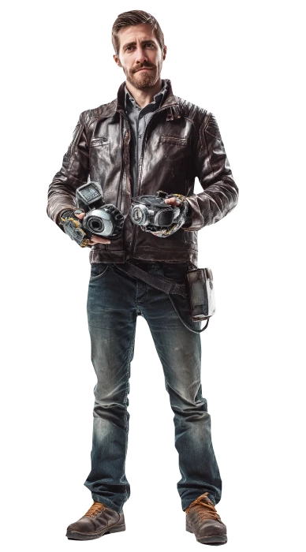
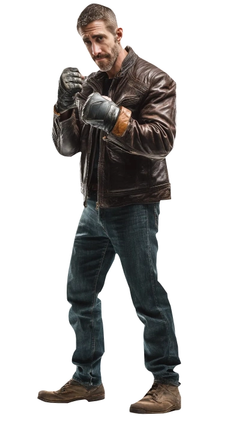

Allen Hawthorne
Allen Hawthorne
The Black Sheep
Born into a family of affluence and magical influence, Allen Hawthorne grew disenchanted with the hypocrisy and deceit prevalent among his kin. Fed up with the facades and falseness, he embraced rebellion, metamorphosing into the family's black sheep, the bad seed. Behind his mesmerizing good looks and intelligent demeanor lay a deceptive soul, exploiting his charm to manipulate and deceive those who couldn't see beyond his beguiling facade.
With his big, bewitching blue eyes, Allen proved a master of illusion, concealing his true motives with an enigmatic allure. Engulfed in the clandestine world of illegal magical wonders and trinkets, he wielded the power of his heritage to procure rare artifacts. These he used either to defy the Technocracy and save them from their clutches or to sell to the highest bidder, dancing dangerously on the edge of law and morality. Allen's journey was a high-stakes gamble, his fate entwined with the volatile trade he navigated, torn between redemption and the pursuit of his own desires in a treacherous dance of shadows and secrets.❧
Plot Hooks.
Magical Items and Inventions When plotting you can expect Allen to appraise magical items, to know and deal in the black market, to explore and indulge in dark desires and to strategize elaborate plans that always go right. Smut wise, Daddy/son and Dom/sub ships work well for him.Signature Motif.
His Car. He is always working on his Porsche Taycan Turbo S with the sole intention to make it faster, safer and more importantly undetectable.Perfect for...
Profane yet romantic and incestuous threads. If you are looking for a man to be toxic, manipulative, aggressive, this man is for you. He can be sweet but expect to engage in terrible decisions (and yet you will love him.) Perfect for sweet innocent twinks looking to have their perfect first time.Goal
Recognition.
Having been shunned and put down for being born outside of marriage, he spent a good amount of his life trying to be validated by his family, until he decided to be the villain they were expecting. While he enjoys the thrill of being a bad guy, he cannot accept but desire to belong and be recognized.obstacle
Pride.
He would never accept his family's help and will reject them outright, only using their name in scorn so that when he is caught they know it was the family that pushed him into said life. That said, he wishes he was recognized. He wishes he was accepted. But his Pride will get in the way.«I'm magnetized by you.»
Personal Data
⭮

Allen Amadeus Hawthorne
Name
42
Age
09/Dec/1988
DOB
Order of Hermes
Sect
Black
Hair
Blue
Eye color
House Verditius
subgroup
White
Ethnicity
Canadian
Nationality
Infamous
Status
1.85m
Height
87 kg
Weight
English and French
Languages
Male
Gender
Homosexual
Preference
Mechanic
Profession
Top
Position
7.5" / 5"
length / Girth
Jake Gyllenhaal
Faceclaim
Fortitude
Word of Power
ENTP
MBTI
Character sheet
Attributes
Distinctions
skills
Paradigm
Turning the Keys to Reality

Nature
Visionary
Demeanor
Rogue

⭮
Determined
Inspirational
Creative
Optimistic
Persuasive
Idealistic
Fanatical
Impractical
Naïve
Irrational
Inspirational
Creative
Optimistic
Persuasive
Idealistic
Fanatical
Impractical
Naïve
Irrational
Creative
Expressive
Visionary
Inspirational
Intuitive
Eccentric
Self-absorbed
Unpredictable
Moodiness
Detached
Expressive
Visionary
Inspirational
Intuitive
Eccentric
Self-absorbed
Unpredictable
Moodiness
Detached
Strength
Dexterity
Stamina

Charisma
Manipulation

Composure
Intelligence
Wits
Resolve
Areté
🙪
Specialties
Inventions
Seduction
Lying
Box
Science
Subterfuge
Insight
Athleticism
Crafts
Technology
Persuasion
Brawl
Drive
Occult
Expression
Melee
Awareness
Streetwise
Drive
Other skills

Focus
Paradigm
Why?
Turning the Keys to Reality Allen believes the Universe can be measured, thus, it follows the laws of logic. Mages are Special because they know how to bend these laws into creating new things. For him, Ascension means knowing everything. An Ascended universe is one where all Men can understand the Universe and use it for their own benefit.
Practices
How?
Craftwork, Alchemy, Hypertech, Weird Science: Adept at creating things, he infuses the techniques of old with the wonders of the new to create new items and bring life to new ideas.
Paraphernalia
With what?
Electrical DevicesInventions
Computers and IT gear
Interface Body-Brain
Potions and Pills
Enchantments
Nanotech

Spheres
Powers maked with ✧ are only available for Adult Allen.

Ars Materiae
Disciple - affinity
Matter PerceptionBasic Transmutation
Alter Form (✧)

Ars Vis
Apprentice
Etheric SensesEffuse Personal Quintessence
Consecration
Fuel Pattern
Weave Odyllic Force
Enchant Patterns
Create Pattern
Body of Light

Ars Essentiae
Apprentice
Perceive ForcesControl Minor Forces

Ars Conjunctionis
Disciple
Immediate Spatial PerceptionsSense, Touch, Thicken And Reach Through Space
Pierce Space (✧)
Seal Gate (✧)
Co-Locality Perception (✧)
Backgrounds



Signature Assets
Perfect Liar
Unless you are reading his brain directly, (plotted before hand) telling if he's lying is always successful without the need to toss dice. If required, any Hitches in his Subterfuge roll can be rerolled.
Mechanical aptitude
His brain works quite fast and realizes quickly how mechanical instruments fit together. He has an aptitude for mechanical devices which allows him to reroll Hitches in Technological related feats.
Tass Extractor
A Periapt of energy that resembles a small thermo. When activated it can turn sunlight into Tass, with a full 8 hours of sun to be turned into 4 points of Quintessence. It can store up to 3 charges (12)
Other Assets
Wonder: T.O.O.L
Technomagical Omni-Operational Loadout - Appears as an unassuming but well-crafted toolbox made of brushed steel and reinforced carbon fiber. Whenever the mage opens it and reaches inside, the interior reorganizes itself in real time—gears whir, compartments shift, drawers slide open on their own—to present the exact tool required for the current task.
Contacts
A group of characters who serve him information or weapons. Players are welcome to take these roles in order to connect with Allen.
Workshop
What appears to be a regular car garage for reparation, holds a very high-tech laboratory on the back where he spends most of his time. During the day he repairs different cars as a business, but by night it's used to craft the most advanced tech devices.